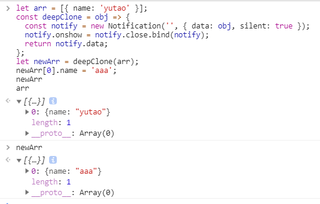

<!DOCTYPE html>
<html>
<head><meta name="generator" content="Hexo 3.8.0">
  <meta charset="utf-8">
  
  <title>JS中Deep Clone的几种方式 | 周宇涛的网络日志</title>
  <meta name="viewport" content="width=device-width, initial-scale=1, maximum-scale=1">
  <meta name="description" content="在某些业务中，我们为了不修改原来的数组或对象，我们基本会选择复制一份，进行处理。 对于数组，我们会使用 [].concat(arr), arr.slice(0)等方法来进行复制对于对象，我们会使用Object.assign({}, obj), {...obj}等方法进行复制处理. 但上面都是浅拷贝，如果数组或对象中的元素是简单类型，那这样不会有问题，如果是复杂类型呢?">
<meta name="keywords" content="JS">
<meta property="og:type" content="article">
<meta property="og:title" content="JS中Deep Clone的几种方式">
<meta property="og:url" content="http://yoursite.com/2018/12/29/JS中Deep-Clone的几种方式/index.html">
<meta property="og:site_name" content="周宇涛的网络日志">
<meta property="og:description" content="在某些业务中，我们为了不修改原来的数组或对象，我们基本会选择复制一份，进行处理。 对于数组，我们会使用 [].concat(arr), arr.slice(0)等方法来进行复制对于对象，我们会使用Object.assign({}, obj), {...obj}等方法进行复制处理. 但上面都是浅拷贝，如果数组或对象中的元素是简单类型，那这样不会有问题，如果是复杂类型呢?">
<meta property="og:locale" content="default">
<meta property="og:image" content="http://yoursite.com/2018/12/29/JS中Deep-Clone的几种方式/image1.jpg">
<meta property="og:image" content="http://yoursite.com/2018/12/29/JS中Deep-Clone的几种方式/history.jpg">
<meta property="og:image" content="http://yoursite.com/2018/12/29/JS中Deep-Clone的几种方式/notification.jpg">
<meta property="og:updated_time" content="2018-12-29T14:18:50.255Z">
<meta name="twitter:card" content="summary">
<meta name="twitter:title" content="JS中Deep Clone的几种方式">
<meta name="twitter:description" content="在某些业务中，我们为了不修改原来的数组或对象，我们基本会选择复制一份，进行处理。 对于数组，我们会使用 [].concat(arr), arr.slice(0)等方法来进行复制对于对象，我们会使用Object.assign({}, obj), {...obj}等方法进行复制处理. 但上面都是浅拷贝，如果数组或对象中的元素是简单类型，那这样不会有问题，如果是复杂类型呢?">
<meta name="twitter:image" content="http://yoursite.com/2018/12/29/JS中Deep-Clone的几种方式/image1.jpg">
  
    <link rel="alternate" href="/atom.xml" title="周宇涛的网络日志" type="application/atom+xml">
  
  
    <link rel="icon" href="/favicon.ico">
  
  
    
  
  <link rel="stylesheet" href="/css/style.css">
  

</head>
</html>
<body>
  <div id="container">
    <div id="wrap">
      <header id="header">
  <div id="banner"></div>
  <div id="header-outer" class="outer">
    
    <div id="header-inner" class="inner">
      <nav id="sub-nav">
        
          <a id="nav-rss-link" class="nav-icon" href="/atom.xml" title="RSS Feed"></a>
        
        <a id="nav-search-btn" class="nav-icon" title="搜索"></a>
      </nav>
      <div id="search-form-wrap">
        <form action="//google.com/search" method="get" accept-charset="UTF-8" class="search-form"><input type="search" name="q" class="search-form-input" placeholder="Search"><button type="submit" class="search-form-submit">&#xF002;</button><input type="hidden" name="sitesearch" value="http://yoursite.com"></form>
      </div>
      <nav id="main-nav">
        <a id="main-nav-toggle" class="nav-icon"></a>
        
          <a class="main-nav-link" href="/">首页</a>
        
          <a class="main-nav-link" href="/archives">归档</a>
        
          <a class="main-nav-link" href="/about">关于</a>
        
      </nav>
      
    </div>
    <div id="header-title" class="inner">
      <h1 id="logo-wrap">
        <a href="/" id="logo">周宇涛的网络日志</a>
      </h1>
      
    </div>
  </div>
</header>
      <div class="outer">
        <section id="main"><article id="post-JS中Deep-Clone的几种方式" class="article article-type-post" itemscope="" itemprop="blogPost">
  <div class="article-meta">
    <a href="/2018/12/29/JS中Deep-Clone的几种方式/" class="article-date">
  <time datetime="2018-12-29T13:19:19.000Z" itemprop="datePublished">2018-12-29</time>
</a>
    
  </div>
  <div class="article-inner">
    
    
      <header class="article-header">
        
  
    <h1 class="article-title" itemprop="name">
      JS中Deep Clone的几种方式
    </h1>
  

      </header>
    
    <div class="article-entry" itemprop="articleBody">
      
        <!-- Table of Contents -->
        
        <p>在某些业务中，我们为了不修改原来的数组或对象，我们基本会选择复制一份，进行处理。</p>
<p>对于数组，我们会使用 <code>[].concat(arr)</code>, <code>arr.slice(0)</code>等方法来进行复制<br>对于对象，我们会使用<code>Object.assign({}, obj)</code>, <code>{...obj}</code>等方法进行复制处理.</p>
<p>但上面都是浅拷贝，如果数组或对象中的元素是简单类型，那这样不会有问题，如果是复杂类型呢?<br><a id="more"></a></p>
<p>让我们看一段代码:</p>
<figure class="highlight js"><table><tr><td class="gutter"><pre><span class="line">1</span><br><span class="line">2</span><br><span class="line">3</span><br><span class="line">4</span><br><span class="line">5</span><br><span class="line">6</span><br><span class="line">7</span><br><span class="line">8</span><br></pre></td><td class="code"><pre><span class="line"><span class="comment">// 原数组</span></span><br><span class="line"><span class="keyword">const</span> arr = [&#123; <span class="attr">name</span>: <span class="string">'yutao'</span>, <span class="attr">age</span>: <span class="number">24</span> &#125;];</span><br><span class="line"><span class="comment">// 拷贝复制</span></span><br><span class="line"><span class="keyword">const</span> newArr = arr.slice(<span class="number">0</span>);</span><br><span class="line"><span class="comment">// 对新数组操作</span></span><br><span class="line">newArr[<span class="number">0</span>].age = <span class="number">25</span>;</span><br><span class="line"></span><br><span class="line">arr[<span class="number">0</span>].age = <span class="number">24</span> ?</span><br></pre></td></tr></table></figure>
<p>这时候我们发现<code>arr[0].age</code>已经被修改成了25，这样导致对原数组造成了破坏，某些情况下我们会发生无法预测的bug。</p>
<p>这是由于，浅拷贝，如果遇到了复杂类型(对象、数组)，只会<strong>拷贝指针地址</strong>，并没有把内容完整的拷贝出来，从而导致我们修改新数组中的内容，对原数组进行了影响。这也不难理解为何称为浅拷贝了。</p>
<p>但是，如果我们想修改新数组中的内容，却又不对原数组造成影响，那我们就要使用深拷贝了，下面将列举一些深拷贝的方式，就当是记录，以便不时之需。</p>
<ol>
<li>暴力的JSON</li>
</ol>
<p>首先当然要祭出最方便、最快捷的方式 <code>JSON.parse(JSON.stringify(obj))</code></p>
<p>这个方法，目前很通用，不过对一些类型支持不友好：<code>Set</code>,<code>Map</code>, <code>WeakSet</code>, <code>WeakMap</code>, <code>Date</code>, <code>RegExp</code>, (<code>Blob</code>, <code>FileList</code>, <code>ImageData</code> 没有测试过)。也就是如果你需要复制的对象包含上面的类型属性，那么你不能使用这种方法，因为你会得到以下内容:</p>
<p></p>
<p>我们可以看到，类型已经变了，但是如果没有以上类型的话，本方法还是非常便捷的。</p>
<ol start="2">
<li>不嫌累的复制</li>
</ol>
<p>这种方法选择的是递归复制，如果是复杂类型，则继续拷贝直到简单类型，这里就不贴上代码了。(￣▽￣)”</p>
<ol start="3">
<li>结构化复制</li>
</ol>
<p>使用标准定义的方法，<code>structuredClone</code>(目前还不支持)，但是目前已有下面几种方法可以实现结构化复制。</p>
<figure class="highlight js"><table><tr><td class="gutter"><pre><span class="line">1</span><br><span class="line">2</span><br><span class="line">3</span><br><span class="line">4</span><br><span class="line">5</span><br><span class="line">6</span><br><span class="line">7</span><br><span class="line">8</span><br><span class="line">9</span><br><span class="line">10</span><br><span class="line">11</span><br><span class="line">12</span><br><span class="line">13</span><br><span class="line">14</span><br><span class="line">15</span><br><span class="line">16</span><br></pre></td><td class="code"><pre><span class="line"><span class="comment">// 1) history.state</span></span><br><span class="line"></span><br><span class="line"><span class="keyword">const</span> deepClone = <span class="function"><span class="params">obj</span> =&gt;</span> &#123;</span><br><span class="line">  <span class="keyword">const</span> oldState = history.state;</span><br><span class="line">  history.replaceState(obj, <span class="literal">null</span>);</span><br><span class="line">  <span class="keyword">const</span> cloneObj = history.state;</span><br><span class="line">  history.replaceState(oldState, <span class="literal">null</span>);</span><br><span class="line">  <span class="keyword">return</span> cloneObj;</span><br><span class="line">&#125;</span><br><span class="line"></span><br><span class="line"><span class="comment">// 2) Notification</span></span><br><span class="line"><span class="keyword">const</span> deepClone = <span class="function"><span class="params">obj</span> =&gt;</span> &#123;</span><br><span class="line">  <span class="keyword">const</span> notify = <span class="keyword">new</span> Notification(<span class="string">''</span>, &#123; <span class="attr">data</span>: obj, <span class="attr">silent</span>: <span class="literal">true</span> &#125;);</span><br><span class="line">  notify.onshow = notify.close.bind(notify);</span><br><span class="line">  <span class="keyword">return</span> notify.data;</span><br><span class="line">&#125;;</span><br></pre></td></tr></table></figure>
<p>通过测试，我们发现我们实现了支持类型的深拷贝:</p>
<p></p>
<p></p>
<blockquote>
<p>欢迎进行补充 O(∩_∩)O</p>
</blockquote>

      
    </div>
    <footer class="article-footer">
      <a data-url="http://yoursite.com/2018/12/29/JS中Deep-Clone的几种方式/" data-id="cjqxugmju00072gvv0wq4h237" class="article-share-link">分享</a>
      
      
      
  <ul class="article-tag-list"><li class="article-tag-list-item"><a class="article-tag-list-link" href="/tags/JS/">JS</a></li></ul>

    </footer>
  </div>
  
    
 <script src="/jquery/jquery.min.js"></script>
  <div id="random_posts">
    <h2>推荐文章</h2>
    <div class="random_posts_ul">
      <script>
          var random_count =4
          var site = {BASE_URI:'/'};
          function load_random_posts(obj) {
              var arr=site.posts;
              if (!obj) return;
              // var count = $(obj).attr('data-count') || 6;
              for (var i, tmp, n = arr.length; n; i = Math.floor(Math.random() * n), tmp = arr[--n], arr[n] = arr[i], arr[i] = tmp);
              arr = arr.slice(0, random_count);
              var html = '<ul>';
            
              for(var j=0;j<arr.length;j++){
                var item=arr[j];
                html += '<li><strong>' + 
                item.date + ':&nbsp;&nbsp;<a href="' + (site.BASE_URI+item.uri) + '">' + 
                (item.title || item.uri) + '</a></strong>';
                if(item.excerpt){
                  html +='<div class="post-excerpt">'+item.excerpt+'</div>';
                }
                html +='</li>';
                
              }
              $(obj).html(html + '</ul>');
          }
          $('.random_posts_ul').each(function () {
              var c = this;
              if (!site.posts || !site.posts.length){
                  $.getJSON(site.BASE_URI + 'js/posts.js',function(json){site.posts = json;load_random_posts(c)});
              } 
               else{
                load_random_posts(c);
              }
          });
      </script>
    </div>
  </div>

    
<nav id="article-nav">
  
    <a href="/2018/12/30/手工实现vue-router/" id="article-nav-newer" class="article-nav-link-wrap">
      <strong class="article-nav-caption">上一篇</strong>
      <div class="article-nav-title">
        
          手工实现vue-router
        
      </div>
    </a>
  
  
</nav>

  
</article>
 
     
  <div class="comments" id="comments">
    
     
       
      <div id="cloud-tie-wrapper" class="cloud-tie-wrapper"></div>
    
       
      
      
  </div>
 
  

</section>
           
    <aside id="sidebar">
  
    

  
    
  
    

  
    
  
    
  <div class="widget-wrap">
    <h3 class="widget-title recent-posts">最新文章</h3>
    <div class="widget">
      <ul>
        
          <li>
            <a href="/2019/01/14/从microTask、macroTask到async-await简单了解/">从microTask、macroTask到async-await简单了解</a>
          </li>
        
          <li>
            <a href="/2018/12/30/手工实现vue-router/">手工实现vue-router</a>
          </li>
        
          <li>
            <a href="/2018/12/29/JS中Deep-Clone的几种方式/">JS中Deep Clone的几种方式</a>
          </li>
        
      </ul>
    </div>
  </div>

  
    

  
    
  
    <!--微信公众号二维码-->


  
</aside>

      </div>
      <footer id="footer">
  
  <div class="outer">
    <div id="footer-left">
      &copy; 2014 - 2019 maczyt&nbsp;|&nbsp;
      主题 <a href="https://github.com/giscafer/hexo-theme-cafe/" target="_blank">Cafe</a>
    </div>
     <div id="footer-right">
      联系方式&nbsp;|&nbsp;369280416@qq.com
    </div>
  </div>
</footer>
 <script src="/jquery/jquery.min.js"></script>
    </div>
    <nav id="mobile-nav">
  
    <a href="/" class="mobile-nav-link">首页</a>
  
    <a href="/archives" class="mobile-nav-link">归档</a>
  
    <a href="/about" class="mobile-nav-link">关于</a>
  
</nav>
    
<script>
// Elevator script included on the page, already.
window.onload = function() {
  var elevator = new Elevator({
    selector:'.back-to-top-btn',
    element: document.querySelector('.back-to-top-btn'),
    duration: 1000 // milliseconds
  });
}
</script>
      

  
    <script>
      var cloudTieConfig = {
        url: document.location.href, 
        sourceId: "",
        productKey: "e2fb4051c49842688ce669e634bc983f",
        target: "cloud-tie-wrapper"
      };
    </script>
    <script src="https://img1.ws.126.net/f2e/tie/yun/sdk/loader.js"></script>
    

  


<!-- author:forvoid begin -->
<!-- author:forvoid begin -->

<!-- author:forvoid end -->

<!-- author:forvoid end -->


  
    <script type="text/x-mathjax-config">
      MathJax.Hub.Config({
        tex2jax: {
          inlineMath: [ ['$','$'], ["\\(","\\)"]  ],
          processEscapes: true,
          skipTags: ['script', 'noscript', 'style', 'textarea', 'pre', 'code']
        }
      })
    </script>

    <script type="text/x-mathjax-config">
      MathJax.Hub.Queue(function() {
        var all = MathJax.Hub.getAllJax(), i;
        for (i=0; i < all.length; i += 1) {
          all[i].SourceElement().parentNode.className += ' has-jax';
        }
      })
    </script>
    <script type="text/javascript" src="https://cdn.rawgit.com/mathjax/MathJax/2.7.1/MathJax.js?config=TeX-AMS-MML_HTMLorMML"></script>
  


 <script src="/js/is.js"></script>


  <link rel="stylesheet" href="/fancybox/jquery.fancybox.css">
  <script src="/fancybox/jquery.fancybox.pack.js"></script>


<script src="/js/script.js"></script>
<script src="/js/elevator.js"></script>
  </div>
</body>
</html>